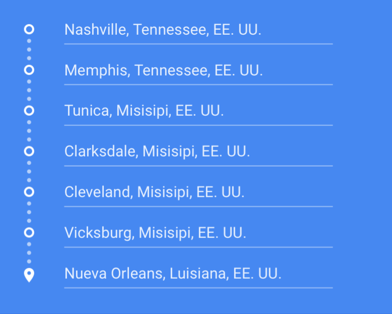
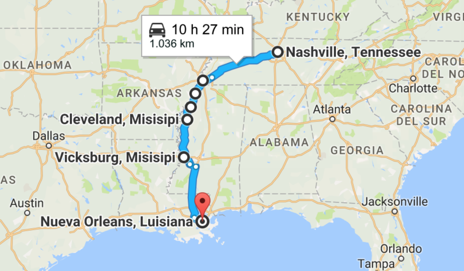

Una ruta inolvidable
No es tan famosa como la 66 pero la Carretera 61 es tan americana o más. Se conoce como la Great River Road, y se inauguró a finales de 1930.
Comienza en la cabecera del Misisipi, en los lagos norteños de Minnesota, y culmina en Nueva Orleans siguiendo el curso del Misisipi, el río que marca la frontera entre el este y el oeste del país. Pasa por diez estados y la red completa de carreteras de esta ruta cubre 1036 kilómetros.
Casi toda la historia mítica de la música norteamericana se puede vivir en estos casi 1100 kilómetros junto al gran río. De Minneapolis a la sureña St. Louis, y desde allí hasta Memphis, la ciudad ligada para siempre a Elvis Presley; después hay que pasar por el delta del Misisipi, donde nació el blues, hasta llegar a Nueva Orleans, cuna del jazz.
A lo largo del camino encontraremos pequeños pueblos que completan esta revisión de la cultura norteamericana, como Hibbing, donde creció Bob Dylan, y Brainered (ambos en Minnesotta), tal y como aparece en Fargo, de los hermanos Coen; Spring Green (Winconsin) donde Frank Lloyd Wright realizó sus primeros proyectos, la rural Hanibal (Missouri), hogar del Mark Twain adolescente, o Metropolis (Ilinois), con la cabina de teléfonos donde Superman se cambiaba a toda velocidad.


Itinerario
Mapa
